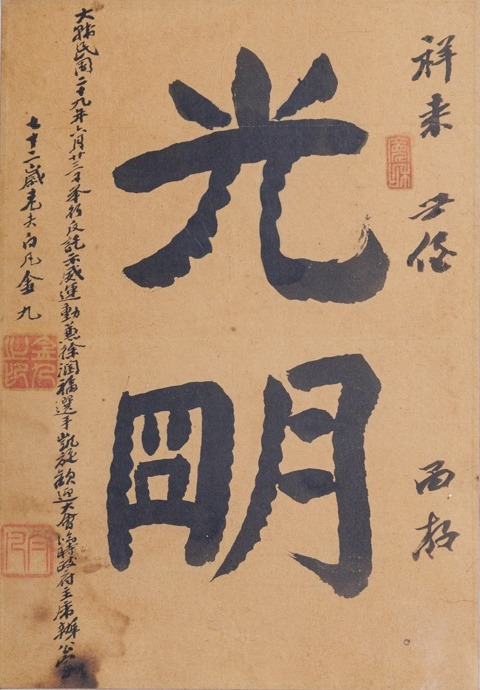

이상래 — 「光明」에 이름이 남은 손자
함평 이동범가, 128년의 인연 | 제7편
지난 6편에서는 종가를 이은 장남, 증조부 춘강 이재승 선생의 기록을 따라가 보았습니다. 이번에는 그 장남이자 저희 할아버지, 이상래(李祥來, 1909~1970) 선생을 소개합니다.
3편에서 「光明」 휘호 오른쪽에 적힌 ‘祥來’ 두 글자를 소개한 적이 있습니다. 그 이름의 주인이 어떤 시간을 살았는지, 집안에 남은 물건과 가족의 기록으로 하나씩 짚어 보려 합니다.
1. 종가의 장손
이상래 선생은 이재승 선생의 장남으로 태어났습니다. 석암 이동범 선생에게는 맏손자이고, 저에게는 할아버지가 되십니다. 김구 선생이 이 진사 댁을 다녀간 지 11년 뒤에 태어나신 셈입니다.
집안에 남아 있는 중동학교 졸업증서에는 생년월일이 ‘명치 42년 1월 8일’, 곧 1909년 1월 8일로 적혀 있습니다. 이상래 선생은 석암 이동범 선생의 손자이자 춘강 이재승 선생의 장남으로, 『함평이씨대동보』에 확인되는 이붕서 선생부터의 직계 계보에서는 일곱 번째 세대에 해당합니다.
2. 서울 중동학교

이상래 선생은 함평을 떠나 서울의 중동학교에서 공부했습니다. 졸업증서는 소화 5년(1930) 3월 5일에 본과 전 학과의 과정을 마쳤음을 증명하고, 끝에 당시 교장 최규동(崔奎東)의 이름이 적혀 있습니다. 집안에서는 할아버지가 중동학교를 마친 뒤 중앙불교전문학교(오늘날 동국대학교의 전신)도 졸업했다고 전합니다. 졸업 연도는 아직 확인하지 못했습니다.
집안에는 학창 시절의 사진도 한 장 전합니다. 금강산 수학여행 때 찍은 사진으로, 교복 차림의 학생 넷이 바닷가 바위 위에 서고 앉아 있는데, 사진 귀퉁이에 ‘於海金剛(해금강에서)’이라는 글씨와 소화 2년(1927)으로 잠정 판독되는 날짜가 남아 있습니다.

사진 맨 오른쪽이 할아버지라는 것은 저의 아버지께서 확인해 주셨습니다. 날짜 글씨는 아직 정확한 판독이 필요해, 소화 2년(1927)은 잠정 판독으로 남겨 둡니다.
3. 일제 말기, 헛간의 쌀
할아버지의 젊은 시절을 가장 생생하게 전하는 기록은 뜻밖에도 한 권의 회고록입니다. 할아버지의 여동생 이학(李鶴) 여사가 2001년에 펴낸 『황진이가 되고 싶었던 여인』입니다.
이 책의 「암흑시대」 장에는 일제강점기 말 공출과 관련된 집안의 이야기가 실려 있습니다. 회고록은 이 시기를 ‘1940년대 초반’으로 적고 있지만, 사건이 일어난 정확한 연도는 아직 확인되지 않았습니다.
소작료로 거둔 곡식까지 모두 내놓으라는 요구가 내려오던 때, 집안에서는 식구들 먹을 쌀을 헛간에 숨겨 두었습니다. 이것이 발각되자 식량을 숨겼다는 이유로 큰오빠 이상래 선생이 경찰서로 연행되었다고 이학 여사는 회고합니다. 일본말을 할 줄 알던 여동생이 집안을 대표해 경찰서로 찾아갔다고 합니다.
곧 돌려보내겠다던 서장의 말과 달리, 할아버지는 “보름 동안을 시달리고 풀려 나왔다”고 책은 적고 있습니다. 어머니가 아들이 찬 바닥에 있는데 따뜻한 데서 잘 수 없다며 방에 불도 지피지 못하게 했다는 대목도 함께 나옵니다.
책은 할아버지를 한학에 전념해 학식은 풍부했지만 말수가 적고 과묵한 분으로 그립니다. 이 일 이후로 더욱 입이 무거워졌고, 얼마 뒤 몸에 지닐 만큼의 식량만 챙겨 영광 불갑사로 들어가 한동안 은둔했다고 합니다.
다만 이 이야기는 가족의 회고로 남은 기록입니다. 연행된 정확한 날짜와 경찰서에서 받은 처분은 아직 당시의 공문서로 확인하지 못했고, 앞으로 함평 지역의 공출·경찰 관련 기록과 대조해 볼 계획입니다.
4. 1947년, ‘祥來’라는 이름
광복 이듬해인 1946년, 서울로 김구 선생을 찾아간 사람은 이상래 선생의 아버지와 작은아버지였습니다. 『백범일지』의 재회 대목에도 이재승·이재혁 두 형제의 이름만 나옵니다.

그런데 그로부터 1년 뒤인 1947년 6월 23일의 관지가 적힌 「光明」 휘호에는 손자의 이름 ‘祥來’가 쓰여 있습니다. 저희 가족에게 이 휘호는 1898년 김구 선생과 이동범가의 인연이 손자 세대에까지 전해졌음을 보여 주는 소중한 유물입니다.
휘호의 글씨와 관지는 3편에서 자세히 소개했습니다. 할아버지가 언제, 어디서, 어떤 경위로 이 휘호를 받으셨는지는 아직 확인되지 않아, 집안에 남은 기록을 더 살펴볼 예정입니다.
5. 남은 질문들
이상래 선생은 1970년에 세상을 떠나셨습니다. 이 글의 생몰년은 제적등본을 기준으로 했으며, 집안에서는 음력 1969년으로 기억해 와 두 기록 사이에 차이가 있습니다.
정리하면서 앞으로 확인할 질문도 분명해졌습니다. 공출 사건과 경찰 연행의 연도·처분, 해금강 사진의 날짜 판독, 「光明」 휘호를 받은 경위, 그리고 중동학교 졸업 이후 1930년대의 행적입니다.
가족의 기억은 소중한 출발점이지만, 기록으로 확인되는 데까지 따라가 보는 것이 이 연재의 원칙입니다.
다음 편에서는 이상래 선생의 아내이자 종갓집 안방을 지켜 온 저희 할머니, 신문란 여사를 소개하겠습니다.
백범김구기념관 공식 인터뷰
https://www.youtube.com/watch?v=a9RnCcFLhq8
함께 보기
- 전체 기록 아카이브 https://lsaru23-ai.github.io/hp-db-archive/
- X @hp_db_archive https://x.com/hp_db_archive
- Threads @hp_db_archive https://www.threads.com/@hp_db_archive
지난 글
- 제1편: ‘이 진사’는 누구였나 — 백범 김구와 함평 이동범가
- 제2편: 보름을 머문 이유 — 1898년, 함평의 은신
- 제3편: 1946년 재회와 光明 — 김구가 다시 찾은 인연
- 제4편: 종가와 이재혁 가옥 — 두 집에 남은 128년
- 제5편: 석암 이동범 — ‘이 진사’의 생애
- 제6편: 춘강 이재승 — 종가를 이은 장남
주요 참고자료
[1] 중동학교 졸업증서(소화 5년, 1930. 3. 5), 가족 소장.
[2] 금강산 수학여행 해금강 기념사진(날짜 글씨 소화 2년·1927년으로 잠정 판독), 가족 소장.
[3] 이학(李鶴), 『황진이가 되고 싶었던 여인』, 범우사, 2001, 90~91쪽(「암흑시대」).
[4] 이동범가 소장 「光明」 휘호 실물(관지 ‘대한민국 29년 6월 23일’).
[5] 김구, 『백범일지』, 336~337쪽.
[6] 제적등본 및 『함평이씨대동보』.
이 글은 문헌과 유물에서 직접 확인되는 사실, 가족의 회고 기록, 집안의 전승을 구분해 작성했습니다. 회고록의 내용은 필자가 요약한 것이며, 추가 사료에 따라 보완할 예정입니다.
정정 기록 (2026-11-23)
· 고친 내용: 해금강 사진 속 이상래 선생의 위치와 사진의 성격
· 고치기 전: “사진 속 네 사람 가운데 누가 할아버지인지는 아직 확인하지 못했습니다” / “여행 사진”
· 고친 뒤: “맨 오른쪽이 이상래 선생” / “금강산 수학여행 사진”
· 근거: 이상래 선생의 아드님(필자의 아버지) 확인
· 상태: 인물 확정(가족 확인) · 날짜 판독은 추가 검증 중
2026-11-25 · 학력 추가 · 근거: 이상래 공 아드님 증언 [전] · 확인 상태: 졸업 연도·학적 미확인